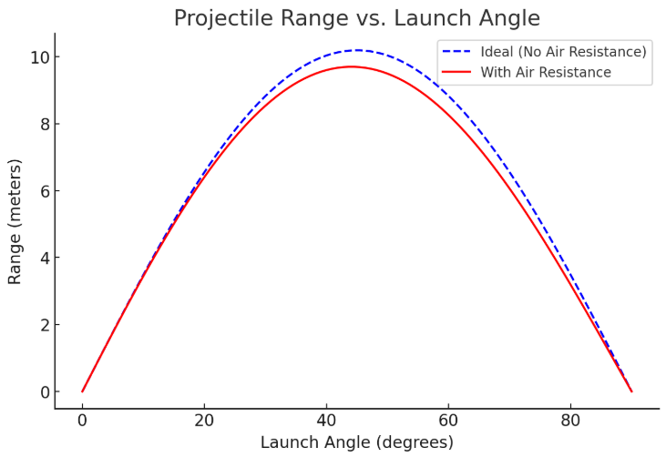

Problem 1
Investigating the Range as a Function of the Angle of Projection
Motivation:
Projectile motion, while seemingly simple, offers a rich playground for exploring fundamental principles of physics. The problem is straightforward: analyze how the range of a projectile depends on its angle of projection. Yet, beneath this simplicity lies a complex and versatile framework. The equations governing projectile motion involve both linear and quadratic relationships, making them accessible yet deeply insightful.
What makes this topic particularly compelling is the number of free parameters involved in these equations, such as initial velocity, gravitational acceleration, and launch height. These parameters give rise to a diverse set of solutions that can describe a wide array of real-world phenomena, from the arc of a soccer ball to the trajectory of a rocket.
Task:
- Derive the equations of motion for projectile moiton
- Analyze the range as a function of the launch angle
- Determine the optimal angle for maximum range
Deliverables:
- Derivations and analytical results
- Graphs illustarting the range vs launch angle
- Discussion on the optimal launch angle and its implications
Hints and resources:
- Utilize kinematic equations and trigonometric identities
- Consider air resistance and other real-world factors in advanced analyses
This task encourages a deep understanding of projectile motion while showcasing its versatility and applicability across various domains.
Solution
Derivation of Equations of Motions for Projectile Motion (ideal case in a vacuum)
Definiton: projectile motion describes the motion of an object launched into the air under the influence of gravity, assuming no air resistance. We analyze it in two componenets:
- Horizontal motion (constant velocity)
- Vertical motion (constant acceleration due to gravity)
Define Variables:
- \(v_0 = \text{initial velocity} \\\)
- \(\theta = \text{launch angle} \\\)
- \(g = \text{acceleration due to gravity} \\\)
- \(t = \text{time} \\\)
- \(x, y = \text{horizontal and vertical coordinates}\)
The initial velocity components are:
Horizontal Motion
Since there is no horizontal acceleration, the horizontal displacement at time \(t\) is:
Vertial Motion
The vertical displacement follows kinematic equation:
The vertical velocity at time \(t\) is:
At the highest point, \(v_y=0\), so solving for \(t\):
The total time of a flight (since time to reach peak height is half of total time) is:
Range as a Function of Launch Angle
The range \(R\) is the total horizontal distance covered during flight:
Optimal Angle for Maximum Range
To maximize the range \(R\), we analyze the function:
Since \(sin2\theta\) is maximized then \(2\theta=90°\), this occurs at:
Thus, the optimal angle for maximum range is \(45°e\)
Andvance Analysis: Considering Air Resistance
Air resistance, also known as drag force, opposes the motion of the projectile and is generally proportional to the square of the velocity:
where:
- \(C_d\) = drag coefficient (depends on the shape of the object)
- \(\rho\) = air density
- \(A\) = cross-sectional area of the projectile
- \(v\) = instantaneous velocity
This force affects both horizontal and vertical motion:
1. Horizontal Motion with Drag
- Unlike the ideal case where \(v_x\) is constant, here, drag continuously slows it down.
- The equation of motion becomes:
where \(k=\frac{1}{2}C_d\rho A\)
- This results in an exponential decay of velocity, making range calculations more complex.
2. Vertical Motion with Drag
- Gravity still acts downward, but drag acts opposite to velocity.
- The equation of motion is:
Since \(v= \sqrt{v_x^2+v_y^2}\), these equations are nonlinear and require numerical solutions.
- The projectile reaches a terminal velocity instead of increasing speed indefinitely downward.
Range as a Function of Launch Angle
With air resistance, no simple closed-form solution exists. Instead, numerical integration is required to compute \(R\) for different angles. The range equation now depends on:
where \(v_x(t)\) is affected by drag, making \(R\) less than the vacuum case.
Effect of Air Resistance on Range and Optimal Angle
- Reduced Range: Air resistance decreases both horizontal velocity and flight time, leading to a significantly shorter range than the ideal case.
- Optimal Angle Shift: In an ideal vacuum, the maximum range is at \(45°\), but with drag, the optimal angle shifts lower (typically between \(35° - 42°\) depending on conditions).
Other real-World Factors
1. Wind Effects
- A tailwind increases range, while headwing reduces it.
- Crosswinds alter the trajectory, requiring agjustments.
2. Varying Gravity (Non-Uniform Field)
- For long-range projectiles (e.g., artillery, rockets), gravitational acceleration varies slightly with altitude and latitude.
3. Magnus Effect (For Spinning Projectiles)
- A spinning object (like a soccer ball or bullet) experiences lift due to air pressure differences (Magnus effect), altering its trajectory.
Numerical Approach for Real-World Projectile Motion
Since the equations become nonlinear due to air resistance, they require numerical integration methods like:
- Euler's Method
- Runge-Kutta Methods (RK4)
- Computational Simulations (Python, MATLAB, etc.)
Plotting
import numpy as np
import matplotlib.pyplot as plt
# Constants
v0 = 10 # Initial velocity (m/s)
g = 9.81 # Acceleration due to gravity (m/s^2)
angles = np.linspace(0, 90, 100) # Launch angles from 0 to 90 degrees
# Ideal case (No air resistance)
R_ideal = (v0**2 * np.sin(2 * np.radians(angles))) / g
# Approximate case with air resistance (simplified model)
drag_factor = 0.05 # Arbitrary factor to simulate air resistance effect
R_realistic = R_ideal * np.exp(-drag_factor * angles / 45) # Approximate decay
# Plotting
plt.figure(figsize=(8, 5))
plt.plot(angles, R_ideal, label="Ideal (No Air Resistance)", linestyle="--", color="b")
plt.plot(angles, R_realistic, label="With Air Resistance", color="r")
plt.xlabel("Launch Angle (degrees)")
plt.ylabel("Range (meters)")
plt.title("Projectile Range vs. Launch Angle")
plt.legend()
plt.grid()
plt.show()
